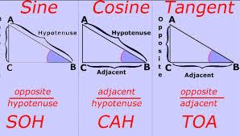
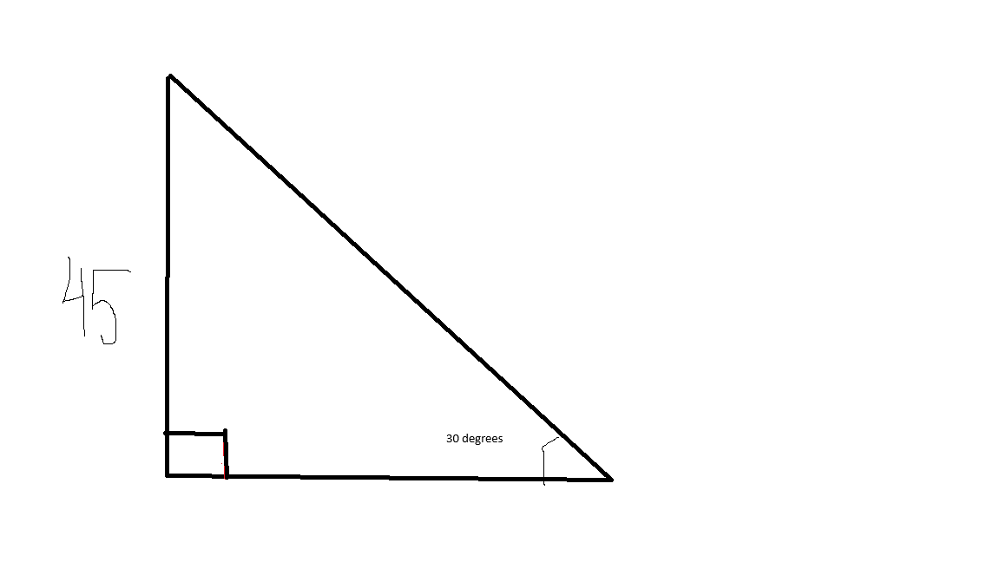

The first thing we are going to talk about is the right angled triangle. A right angle is 90 degrees or π/2 in radians. In a right triangle, this is noted as a small square in the corner of the triangle. See below:

In the diagram above, the right angle is marked by the small square in the bottom left corner. In some triangles, another angle is marked with the symbol theta (θ). With this symbol, we can now define the legs of this right triangle. The leg beside theta is the adjacent leg and the leg opposite theta is the opposite leg. The longest leg of the triangle is the hypotenuse.
The word trigonometry originates from the Greek words "trigonon" meaning triangle and "metron" meaning to measure. Together they form the word trigonometry.
In trigonometry, there are many functions but the three most important ones are sine cosine and tangent. These functions are often abreviated as sin, cos and tan as you will see on your calculator.
One property of right triangles is that the ratio inbetween the sides of the triangle is always the same. That is why these three functions always work. The ratios for these functions are: for sine, opposite/hypotenuse, for cosine, adjacent/hypotenuse, and for tangent, opposite/adjacent. These may be hard to remember, so we use the pneumonic SOHCAHTOA. This stands for sine, opposite, hypotenuse, cosine, adjacent, hypotenuse, tangent, opposite and adjacent. We can use these to remember the Trigonometric ratios.

As you can probably see, the picture above demonstrates how SOHCAHTOA relates to the right triangle. In the image, angle B would be theta.
To use the three trigonometry funcions, we need at least an anlge and a side length. This can be used for when you only have one side and cannot use the Pythagorean Theorem. Take a look at this example:

As yous can probably see, in the example above, we have a triangle with a 30 degree angle and a side with a side of 45.
Now, we will try to find the hypotenuse of the triangle. To use the trigonometric functions, we use the angle provided. Since the angle is 30°, we take the sine of that angle. The sine of 30° is 0.5. Because the opposite/hypotenuse leg = 0.5, the equasion is now 45/hypotenuse, meaning that 45/something=0.5. Now we can solve this by doing 45/0.5, which equals 90.
Want to try another example? Click here :O
About